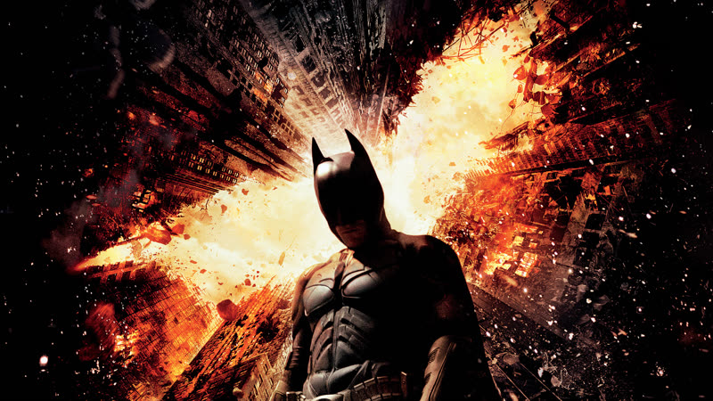
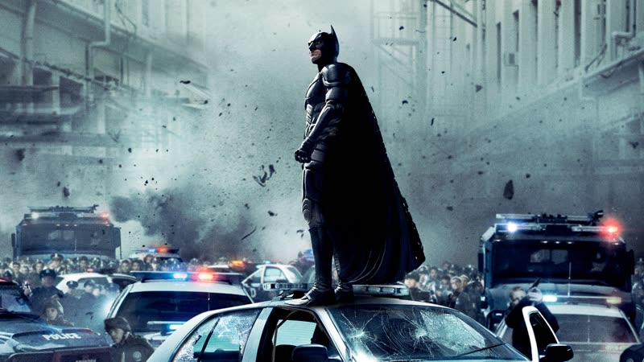
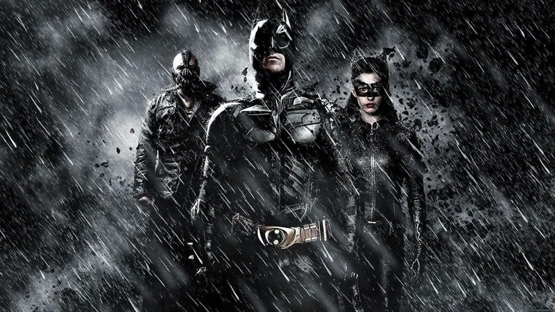
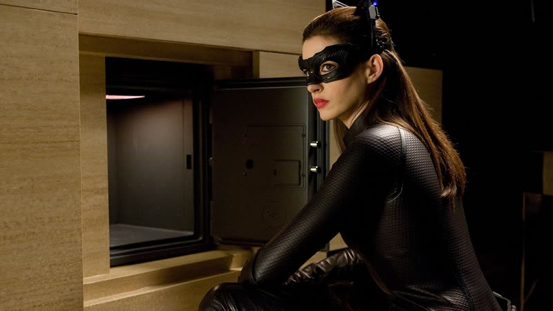
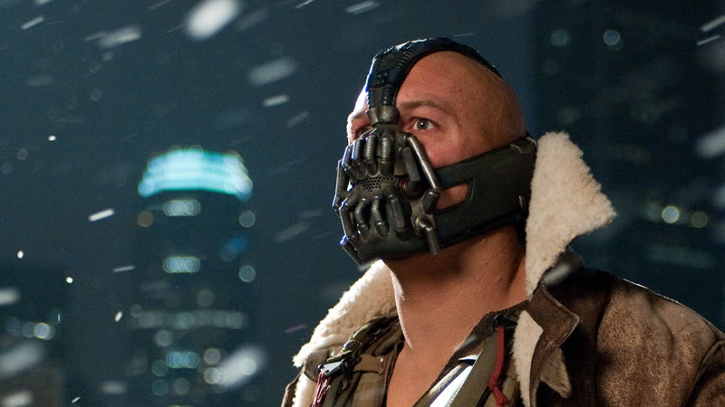

2012
The Dark Knight Rises
Eight years on, a retired Batman returns to a Gotham that is then cut off, ruled by a mob and put on a countdown.
How it plays with time
The film runs in order but leaps over long gaps: eight quiet years after the previous film, then a siege of Gotham that lasts months, with Bruce's imprisonment and climb out of the pit sitting inside that stretch. The countdown to the bomb at the end is the only place the clock tightens to hours. source
Themes
- Order and chaos
- Bane seals Gotham off, lets its wealthy be dragged from their homes and put before improvised courts where the crowd's noise counts for more than evidence. The city's institutions are not destroyed by one blow but taken over and turned inside out. source
- Sacrifice
- Batman flies the bomb out over the bay, away from the city, seemingly giving up his life to save it. Gordon later reads from Dickens at a funeral for a man the city thinks it has lost. source
- Fear
- Bruce, broken and imprisoned in a deep pit, is told that the way out requires climbing without a safety rope, because fear is what lets a person leap. Only when he lets go of the safeguard does he make the jump.
- Duty
- After eight years in retirement, Bruce is drawn back into the costume as Gotham slides toward collapse, even though his body and the police both argue against it. source
Where it came from
- Christopher Nolan said the script drew on Dickens's A Tale of Two Cities, which his brother Jonathan introduced him to; he had not read it before. Christopher Nolan source
- Jonathan Nolan described the novel as a picture of a recognisable civilisation falling apart, and said the story was developed in 2008, before the Occupy protests. Jonathan Nolan source
- Nolan chose Bane over the Riddler because he wanted a physically imposing villain, a classic movie monster. Christopher Nolan source
- Nolan agreed to a third film only once he had a story, written with Jonathan and David S. Goyer, that he felt could end the series. Christopher Nolan source
Stills





Stills © their studios, used here for commentary and criticism.
People who keep coming back
- Wally Pfister, Cinematographer: also memento, insomnia, batman begins, the prestige, the dark knight, inception
- Hans Zimmer, Composer: also batman begins, the dark knight, inception, interstellar, dunkirk
- Lee Smith, Editor: also batman begins, the prestige, the dark knight, inception, dunkirk
- Nathan Crowley, Production designer: also batman begins, the prestige, the dark knight, inception, interstellar, dunkirk, tenet, oppenheimer
- Michael Caine, Alfred Pennyworth: also batman begins, the prestige, the dark knight, inception, interstellar, tenet
- Gary Oldman, James Gordon: also batman begins, the dark knight, oppenheimer
How it was received
Mostly warm: critics called it a fitting end to the trilogy, with reservations about plot holes and the scale. Overshadowed by the Aurora, Colorado shooting at a midnight screening on opening night. Metacritic 78 source. Rotten Tomatoes 87% source.
Remains popular with audiences (Rotten Tomatoes audience score 90% at fetch), though the page text mentions viewers still joking about Bane's voice and plot logic. Letterboxd average could not be read reliably.
Three things most people miss
- Bane's habit of finger-knitting paracord is a nod to Madame Defarge, the knitting revolutionary in A Tale of Two Cities. source
- Gordon's graveside reading at Bruce's funeral is taken from the closing lines of A Tale of Two Cities, and Bruce is set up as a Sydney Carton figure who dies in another man's place. source
- More than an hour of the film was shot on IMAX cameras, against about 28 minutes in The Dark Knight, and Nolan skipped the digital intermediate so the image was handled less. source
Cast
Christian Bale as Bruce Wayne / Batman; Michael Caine as Alfred Pennyworth; Gary Oldman as James Gordon; Anne Hathaway as Selina Kyle; Tom Hardy as Bane.